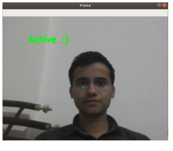
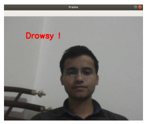
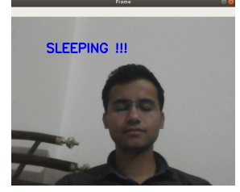

PROJECTS
The idea behind this system is to check the driver monitoring system which is used to save the humans life
in case of emergency risk Drivers must keep a close eye on the road, so they can react to sudden events
immediately.
<>Driver fatigue often becomes a direct cause of many traffic accidents. Therefore, there is a need
to develop the systems that will detect and notify a driver of her/him bad psychophysical condition, which
could significantly reduce the number of fatigue-related car accidents.
This is becoming a common reason for signs of drowsiness and fatigue in drivers, including tiredness in eyes and yawning. One of the technical
possibilities to implement driver drowsiness detection systems is to use the vision-based approach. The
dataset uses left eye detection and right eye detection.
With all the features, an OpenCV and keras a driver's fatigue or drowsiness model is built. The Validation results indicate the precision and accuracy of the proposed model
ROLE:
We are four members as a team.
I am Second member of the team.
I collect several research papers from different websites like IEEE, Research Gate, Elsewhere, Springer,etc.


